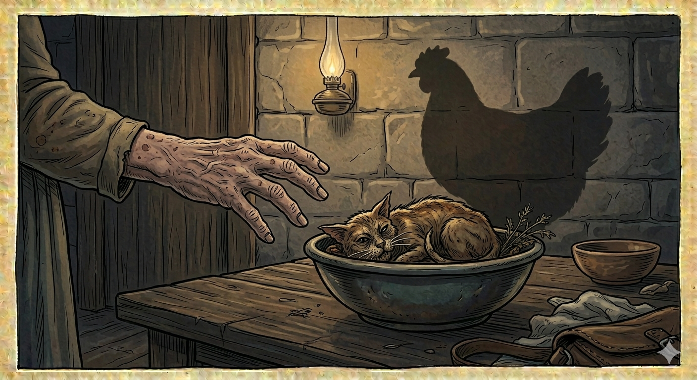

И.А. Дахкильгов. Хьехаме дувцарш - поучительные рассказы-притчи.
И.А. Дахкильгов. Хьехаме дувцарш - поучительные рассказы-притчи. Из ингушского фольклора.

Бекхам хиланза бусаргбац
Геттар къаенна, ши бӀарг байна, метта уллаш хиннай цхьа йоккха саг. Котамага дог эттад цун. Ший несийга аьннад цо, котам кийчъю ялара шийна, аьнна. Нус цӀаьрмата хиннай. БӀар-са дайнача укхунна-м сенах ховргдар из, аьнна, котама когаметта циск кийчадаьд цо. Шийна циск оттадаьга хайнад йоккхача сага, хӀама аьннадац сага хозийташ, хӀаьта дагахьа аьннад: "Далла кхел йойла хьона!". Йоккха саг а дӀаяьннай, ха-зама а яьннай, из нус а къаеннай, из а метта аллийсай. Котам яа безам эттаб цун а. Несийга йийхай. Яха цо котам йийнай. Котам, хӀа аьнна лешшехьа, циск а хинна дӀаэттай. ШоллагӀа йийнача котамах а циск хиннад, кхоалагӀчох а хиннад. Маьр-нана йолча а чуена, аьннад несас: - ХӀанзолца хинна хӀама дац ер: йийнача котамах циск хулаш. Йийнача кхаъ котамах хьахинна кхо циск улл вай коа. - ДӀакийчаде Ӏа циск, - аьннад йоккхача саго, - Даллас сона беш бола бекхам ба из. Сай хана аз сай маьр-нанна баьча тийшача балхах.
РУССКИЙ
Возмездие неминуемо
Слепая, прикованная к постели больная старуха попросила у своей снохи приготовить курицу, надеясь, что ей полегчает. Сноха была жадная. Решив, что слепая ничего не узнает, она вместо курицы приготовила ей кошку. Старуха сразу же узнала, чем ее покормили, однако, ничего вслух не сказала. Она съела кошку и про себя сказала: "Боже, воздай ей!" Старуха умерла. Время прошло. Сноха состарилась и болезнь приковала ее к постели. Захотелось ей курятины. Она попросила приготовить курицу. Та пошла и зарезала курицу, но она тут же превратилась в кошку. Зарезала вторую курицу, та тоже превратилась в кошку. С третьей произошло то же самое. Пораженная сноха вошла и выразила свекрови свое недоумение: - Никогда такого не было. Какую бы курицу не зарезали, она тут же превращается в кошку! - Вари кошку и неси, - ответила свекровь, - это мне возмездие за то, что я в свое время подло поступила со своей свекровью.
ENGLISH
Retribution is inevitable
A blind, bedridden old woman asked her daughter-in-law to cook a chicken, hoping it would make her feel better. The daughter-in-law was greedy. Deciding that the blind woman would never find out, she cooked a cat for her instead of a chicken. The old woman immediately realised what she had been fed, but said nothing out loud. She ate the cat and said to herself: 'God, let her get her comeuppance!' The old woman died. Time passed. The daughter-in-law grew old and illness confined her to her bed. She fancied some chicken. She asked for a chicken to be cooked. The old woman went and slaughtered a chicken, but it immediately turned into a cat. She slaughtered a second chicken, and that one turned into a cat too. The same thing happened with the third. The bewildered daughter-in-law went in and expressed her confusion to her mother-in-law: 'This has never happened before. No matter which chicken we slaughter, it immediately turns into a cat!' 'Cook the cat and bring it to me,' replied the mother-in-law, 'this is my retribution for the way I treated my own mother-in-law back in the day.'
НОХЧИЙН
ПОГОВОРКИ
Во оамал Ӏомае атта да, дикаяр лелае хала да. Легко заиметь плохую привычку (черту характера), но трудно хорошую черту уберечь. It's easy to pick up a bad habit, but hard to preserve a good character trait. Вон оамал 1амо атта ду, дика оамал ларъян хала ду.Гаьго яьхар даьр бакъахьа ваьннавац. Желудку потакать – добра не видать. Giving in to the stomach never led to anything good. Кийра лаьар динчо дика ца карайо.Истара фоарт санна чӀоагӀа я эхь доацача сага бат. Лицо бессовестного человека каменно, как шея быка. The face of a shameless man is as hard as an ox's neck. Эхь боцу стеган бат уьстаг1ан барзкъа санна ч1ог1а ду.Наха зулам де гӀийртар ше вонах ваьннавац. Кто стремился другим навредить, тот сам вреда не избежал. He who sought to harm others did not escape harm himself. Наха зулам дан г1ертар ша воцу ваьллав.Сутарча сагаца гаргало ма лелаелахь, - шин кепигал мах боацача меттиге цо вохкаргва хьо. Со скупцом не водись, потому что он продаст тебя за пару медных грошей. Don't get close to a miser — he'll sell you for two copper coins. Сутарчуьнца гергарло ма ло, шинна эпчиган мах боцу метте вохку хьо цо.Тийшача балхах дикадар даьннадац. От подлости хорошего не жди. Baseness never brings anything good. Тийша болхах дика ца до1у.Харца даь хӀама кхел йоацаш дисадац. Неправильно сделанное суда времени не избежит. A wrong done never escapes judgment forever. Харцахо динарг кхелах ца дуьсу.Хьайна хулача пайданна духьа сага водар ма де, - цу сага къайла хьо воде а, Даллана къайла гӀоргвац хьо. Не вреди другому ради своей пользы: если он об этом и не узнает, то бог Дяла же все это видит. Don't harm another for your own gain — even if he never finds out, God Dyala sees everything. Хьайна пайда хилийта нахана вон ма де, - цунах къайла хилча а, Далла къайла хир дац.Хьакха хоттала керч, воча сагах зуламаш хьерч. Свинья в грязи валяется, а плохой человек в черных делах мотается. A pig wallows in filth, and a bad man wallows in dark deeds. Хьакха хоттала керчу, вон стаг зуламашка керчу.Хьакхий даьтта хьакхий маьченна хьекхад. Чувяк из свиной кожи смазывают свиным жиром. Pigskin slippers are greased with pig fat. Хьакхин маьчана хьакхин даьтта хьекха.Ӏа аьнна во, кхийсте-кхийсте, хьа лерге отт; Ӏа даь во кхийсте-кхийсте, хьа мера кӀала отт. Скажешь плохое слово, оно когда-нибудь вернется к твоим ушам; совершишь дурной поступок, он когда-нибудь да щелкнет тебя по носу. The bad word you spoke will one day return to your own ears; the bad deed you did will one day strike your own nose. Хьайра аьлла вон дош т1аьхьа хьайна лерга кхета; хьайра динарг вон т1аьхьа хьайна мерга кхета.Ӏа аьнна во, кхийсте-кхийсте, хьа лерге отт; Ӏа даь во хьох кхетанза дусаргдац. Сделанное тобою доброе дело, может, к тебе вернется, а может, и нет; но твой дурной поступок обязательно к тебе вернется. A good deed of yours may return to you, or it may not; but your bad deed will always return to you. Хьайра динарг дика хьоьга юхакхаьчаза а дуьсур ду, вон т1аьхьа хьоьга кхечаза ца дуьсу.